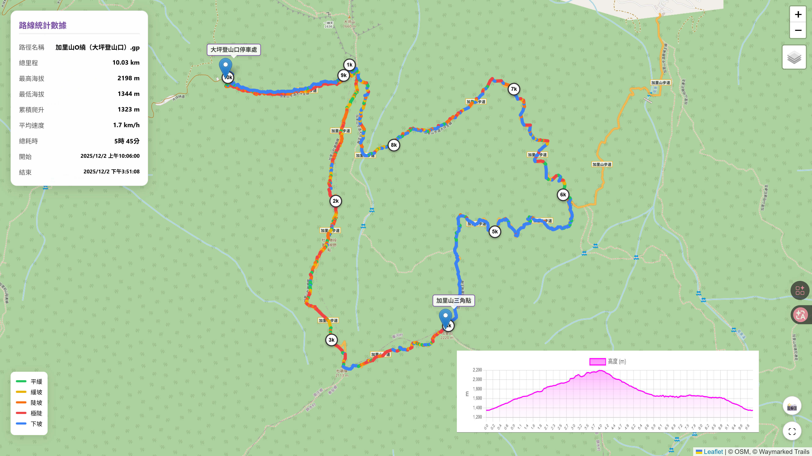

Day 1: 鳴鳳古道暖身
2/22 (日)
關鍵字：獅潭老街、鳴鳳古道、車泊之夜
即時氣象 (2/22): ☀️ 晴朗 | 🌡️ 14-23°C | ☔ 降雨 6-25%
07:30 高雄出發
導航：獅潭義民廟 (車程約 3.5h，考量年假收假車流，時間抓寬鬆一點)。
11:00 獅潭義民廟會合，獅潭老街享用午餐
- 停車：義民廟前免費停車場
- 推薦：仙山仙草 (炸仙草、仙草雞湯)、阿妹狗水粄
16:00 補給採買
7-ELEVEn 新獅潭門市：購買晚餐、明日早餐及爬山午餐。
16:30 前往露營區
途經 仙山靈洞宮 可稍作停留看雲海。
17:30 入住：知泉露營區
(車床天地特約)
- 設施：園區有涼亭區可遮蔽，或可使用公共區域的遮雨棚
- 費用參考：車床天地會員通常優惠價一車 $350 (需出示會員卡確認)
- 享受山中寧靜車泊之夜，泡茶聊天
Day 2: 台版富士山挑戰
2/23 (一)
關鍵字：加里山、秀巒溫泉
即時氣象 (2/23): 🌤️ 晴轉多雲 (午後陣雨) | 🌡️ 12-26°C | ☔ 降雨 10-66%
05:00 起床、整理裝備、早餐
準備迎接挑戰的一天
06:30 前往加里山大坪登山口
晨間小心濃霧
07:30 加里山登山 (O型)
大坪 -> 杜鵑嶺 -> 三角點 (2220m) -> 鐵道懷舊路 -> 大坪登山口。
耗時：約 5.5~6 小時。
時間節點 (Time Check)：
- 10:00 抵達杜鵑嶺 (地毯路光影極美，適合攝影，但勿逗留太久)。
- 11:00 抵達三角點 (大休、午餐、眺望聖稜線)。
- 11:40 務必離開三角點 (開始下切，預留緩衝時間)。
- 14:00 回到登山口 (整理裝備，準備移動)。

16:00 前往秀巒
走竹60線，途經宇老觀景台。
Day 3: 神木巡禮 & 秀巒漫遊
2/24 (二)
關鍵字：B區神木群、控溪吊橋、軍艦岩、野溪溫泉
即時氣象 (2/24): 🌧️ 小雨/短時陣雨 | 🌡️ 9-20°C | ☔ 降雨 35-55%
06:30 起床、整理裝備、早餐
享用山林早餐，準備出發
07:30 前往鎮西堡
從秀巒出發，車程約 50-60 分鐘
13:30 離開登山口
結束神木群健行，準備前往秀巒。
14:30 秀巒周邊漫遊
(不趕路最舒服)
- 控溪吊橋：四面環山的壯麗景色，2月可賞山景
- 軍艦岩：矗立在溪谷中的巨石，氣勢磅礡
- 漫步時間：約 1-1.5 小時，屬於平緩的散步行程
16:30 續住：劉老村長
- 不需移動行李，直接泡湯
- 營區有遮雨棚，晚上聊天泡茶不怕露水或下雨
- 晚餐：簡單自煮或從秀巒當地小吃店解決
Day 4: 雲端玻璃步道與悠閒午餐
2/25 (三)雨天備案 (Plan B)
Day 1 獅潭/南庄
- 南庄老街 (室內漫遊)：桂花巷、百年郵局。
- 臺灣客家文化館 (苗栗銅鑼)：大型室內博物館，免費參觀。
- 提早進駐露營區，利用涼亭/雨棚泡茶。
Day 2 加里山/秀巒
❌ 取消登山 (泥濘濕滑危險)
- 張學良文化園區 (五峰清泉)：張學良故居、三毛夢屋。
- 提早去劉老村長泡湯：半露天湯屋/大眾池有頂棚。
Day 3 鎮西堡/秀巒
- 小雨：穿雨衣可走 B 區 (樹林遮蔽)，注意樹根濕滑。
- 大雨：放棄入山。續留營區泡湯補眠，或提早去內灣/合興車站逛文創店。
Day 4 宇老/青蛙石
- 宇老起霧：至綠木頭餐廳室內用餐觀雲霧。
- 青蛙石雨大：改去北埔老街 (姜阿新洋樓、擂茶DIY)。